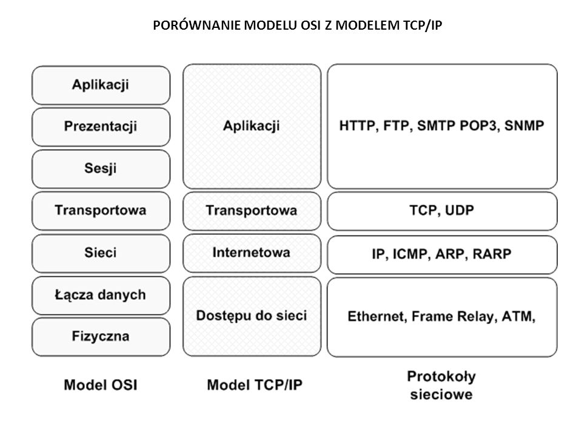

Model ISO
Wprowadzenie
Model OSI (pełna nazwa ISO OSI RM, ang. ISO Open Systems Interconnection Reference Model – model odniesienia łączenia systemów otwartych) lub OSI – standard zdefiniowany przez ISO oraz ITU-T opisujący strukturę komunikacji sieciowej.
Międzynarodowa Organizacja Normalizacyjna (ang. International Organization for Standardization) na początku lat osiemdziesiątych dostrzegła potrzebę stworzenia modelu sieciowego, dzięki któremu producenci mogliby opracowywać współpracujące ze sobą rozwiązania sieciowe. W taki sposób powstała specyfikacja Open Systems Interconnection Reference Model, która do polskich norm została zaadaptowana w 1995 roku.
Model ISO OSI RM jest traktowany jako model odniesienia (wzorzec) dla większości rodzin protokołów komunikacyjnych. Podstawowym założeniem modelu jest podział systemów sieciowych na 7 warstw (ang. layers) współpracujących ze sobą w ściśle określony sposób. Został przyjęty przez ISO w 1984 roku a najbardziej interesującym organem jest wspólny komitet powołany przez ISO/IEC, zwany Joint Technical Committee 1- Information Technology (JTC1). Formalnie dzieli się jeszcze na podkomitety SC.
Dla Internetu sformułowano uproszczony Model TCP/IP, który ma tylko 4 warstwy.
Warstwa aplikacji
Warstwa procesowa czy warstwa aplikacji (ang. process layer) to najwyższy poziom, w którym pracują użyteczne dla człowieka aplikacje takie jak np. serwer WWW czy przeglądarka internetowa. Obejmuje ona zestaw gotowych protokołów, które aplikacje wykorzystują do przesyłania różnego typu informacji w sieci. Wykorzystywane protokoły to m.in.: HTTP, Telnet, FTP, TFTP, SNMP, DNS, SMTP, X Window.
Warstwa trasnportowa
Warstwa transportowa (ang. host-to-host layer) gwarantuje pewność przesyłania danych oraz kieruje właściwe informacje do odpowiednich aplikacji. Opiera się to na wykorzystaniu portów określonych dla każdego połączenia. W jednym komputerze może istnieć wiele aplikacji wymieniających dane z tym samym komputerem w sieci i nie nastąpi wymieszanie się przesyłanych przez nie danych. To właśnie ta warstwa nawiązuje i zrywa połączenia między komputerami oraz zapewnia pewność transmisji.
Warstwa internetu
Warstwa Internetu lub warstwa protokołu internetowego (ang. internet protocol layer) to sedno działania Internetu. W tej warstwie przetwarzane są datagramy posiadające adresy IP. Ustalana jest odpowiednia droga do docelowego komputera w sieci. Niektóre urządzenia sieciowe posiadają tę warstwę jako najwyższą. Są to routery, które zajmują się kierowaniem ruchu w Internecie, bo znają topologię sieci. Proces odnajdywania przez routery właściwej drogi określa się jako trasowanie.
Warstwa Dostepu do sieci
Warstwa dostępu do sieci lub warstwa fizyczna (ang. network access layer) jest najniższą warstwą i to ona zajmuje się przekazywaniem danych przez fizyczne połączenia między urządzeniami sieciowymi. Najczęściej są to karty sieciowe lub modemy. Dodatkowo warstwa ta jest czasami wyposażona w protokoły do dynamicznego określania adresów IP.
Implementacja
W dzisiejszych czasach, praktycznie każdy system operacyjny posiada domyślnie zainstalowane protokoły TCP/IP.
Istnieje także Lightweight TCP/IP, szerzej znany jako darmowy stos TCP/IP dla systemów wbudowanych, czyli będących integralną częścią obsługiwanego przez nie sprzętu - jest to stos protokołów dla systemów obsługujących zarówno amatorskie jak i zaawansowane urządzenia, często budowane z wykorzystaniem programowalnych układów FPGA (np. sprzętowe serwery WWW, FTP). Istnieją także proste stosy TCP/IP realizowane całkowicie sprzętowo.
Schemat

Przejdź do strony Model TCP/IP | Model ISO/OSI